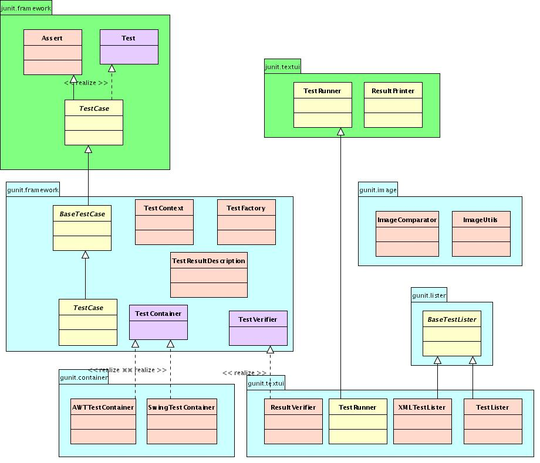

GUnit is an unit test framework that extends
JUnit (
http://www.junit.org))
mainly focused
for graphics unit tests development and execution. All testcases
developed for Gunit can be run with Junit testrunners. Gunit also
provides its own runner that extends Junit's runner with more features.
This document is focused on how one
develops unit tests, execute them and also extend the framework as
appropriate. Design and internals of the framework are beyond the scope
of this document.
The following class diagram shows the layering of GUnit on top of
Junit.

The following are the key classes that the developer needs to focus for
developing unit tests.
gunit.framework.TestCase
This is an abstract class that must be extended to create testcases.
This class provides the infrastructure for Graphics testcase
developers. Refer to the javadoc for the methods provided by this class
Test Recipe
Create a public class that extends gunit.framework.TestCase and provide
a no-arg
constructor
public class DrawTest extends gunit.framework.TestCase {
public DrawTest() {
}
}
|
Optionally override TestCase.setUp() and TestCase.tearDown() and ensure
that you call super's version before your version.
public class DrawTest extends gunit.framework.TestCase {
public DrawTest() {
}
protected void setUp() {
super.setUp();
// DrawTest specific setup
}
protected void tearDown() {
super.tearDown() ;
// DrawTest specific teardown
}
}
|
Write your testcase method(s) by naming the method with a test prefix
public class DrawTest extends gunit.framework.TestCase {
public DrawTest() {
}
protected void setUp() {
super.setUp();
// DrawTest specific setup
}
protected void tearDown() {
super.tearDown() ;
// DrawTest specific teardown
}
public void testRect() {
Graphics g = getGraphics() ;
g.drawRect(0, 0, this.args[0]. this.args[1]) ;
}
public void testAPI() {
Integer i = new Integer(209) ;
int actual = i.intValue() ;
}
}
|
If you can assert the testcase result programatically, do so using the
appropriate Assert.assert*() or Assert.fail() methods.
public class DrawTest extends gunit.framework.TestCase {
public DrawTest() {
}
protected void setUp() {
super.setUp();
// DrawTest specific setup
}
protected void tearDown() {
super.tearDown() ;
// DrawTest specific teardown
}
public void testRect() {
Graphics g = getGraphics() ;
g.drawRect(0, 0, this.args[0]. this.args[1]) ;
assertEquals(super.getReferenceImage(), super.getTestImage()) ;
}
public void testAPI() {
Integer i = new Integer(209) ;
int actual = i.intValue() ;
if ( actual != 209 )
fail("It is not 209") ;
}
}
|
If you cannot assert the testcase result programatically, provide a
brief description of what the result should be, by doing the following.
- Create a file with the same name as the TestCase subclass with a
.xml suffix and place it in the same directory along with the java
sources (For example :- DrawTest.xml)
- In the file add the following for each of the testcase method
that cannot assert the result programatically.
<methodName>
<test>
test description line 1
test description line 2
...
test description line n
</test>
<image>
URL of the imagefile
</image>
</methodName>
This allows the runner to validate the result manually
A test runner's job is to collect all the testcases specfied by the
user and runs them. All test runners are java
applications (meaning they have a static main() method) and take a well
defined set of arguments.
java junit.textui.TestRunner <junit-options> <testcaseclass>
(or)
java gunit.textui.TestRunner [<options>] <testcase-class>|<testcase-method>
where <options> = <junit-options> <gunit-options>
Refer to junit.textui.TestRunner for <junit-options>
(Note :- <testcase-method> is specified using <class-name>.<method-name>
and is only supported by Gunit)
<gunit-options> are the following. (Note, all gunit options start with
'--' so that it does not collide with junit options)
--h | --help
Prints this usage
--cc | --containerclass <classname>
Specifies the container class, which implements
"gunit.framework.TestContainer" interface. This container is handed
to the GUI testcases.
(Default = "gunit.container.AWTTestContainer")
--pc | --printerclass <classname>
Specifies the result printer class, which should extend
"junit.textui.ResultPrinter".
(Default = "junit.textui.ResultPrinter")
--ta | --testargs <filename>.xml
Name of the file that contains the test arguments. The format of
the file is as follows.
<default>
<args></args>
<args></args>
...
</default>
<methodname>
<args></args>
<args></args>
...
<methodname>
The "<default>" is optional and if present is used if a method
specific arguments are not present.
The "<methodname>" is fully qualified classname-methodname and
the '.' in the classname is changed to '-'.
(For example if the methodName is "testFoo" and
resides in a class "moc.nus.Bar" then the methodname is specified
as moc-nus-Bar-testFoo).
This file can be autogenerated using
"gunit.textui.XMLTestLister --tb <filename>|<testcaseclass>"
--tb | --testbundle <filename>
File that contains a list of java class names seperated by newlines
that should be run by the runner.This option ignores
<testcase-class> or <testcase-method> if specified.
--rp | --refimagepath <directory>[:<directory>]
The directory path (seperated using :) that contain the reference
images.
(Default = "/tmp")
|
The following is a sample of how testcases are specified in the
test-bundle.
<tests-j2d-Benchmark-testFillRect>
<args>images/duke.gif</args>
<args>-i</args>
<args>100</args>
</tests-j2d-Benchmark-testFillRect>
<tests-j2d-Benchmark-testCloneGraphics>
<args>images/javalogo.gif</args>
<args>-i</args>
<args>100</args>
</tests-j2d-Benchmark-testCloneGraphics>
|
Generating Reference Images
Graphics testcases can assert if the rendition is the same as some
reference image. Generating reference images are incremental, meaning
as you code each testcase you can generate them. when you run your
testcase with the following line
assertImageEquals(getReferenceImage(),
getTestImage())
Gunit checks if there is a reference image for the testcase in the list
of directories. If it cannot find one then it prompts the user to
create the reference image. The user can look at the rendered output of
the testcase on the screen and if he thinks it is correct, can goahead
with the generation of the reference image. When the next time you run
the testcase it will aitomatically perform the comparison and report
the result accordingly
|
:::
Reporting Results :::
|
By default gunit's runner uses junit's result printer. If
you need to report in some other format extend
junit.textui.ResultPrinter and
implement the required methods to report results differently. As of
this version there are no other result printers available.
Last
Modified : 10/25/06